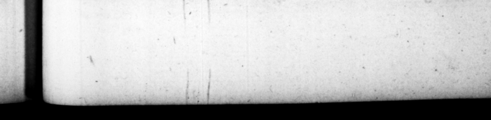

— catitica, prius oxſultans etiam P. 12, Talibus principiis mag» nam Imperii rartem , non niſi confilio & arbitrio viliſſimi cujuſque hiſtronum & aurigzrum adminiſtravit : & maxime Afianci liberci. Hunc adoleſcentulum mutua lihidine conſtupratum, mox tdio profugum, cum Puteolis 23 vendentem de px ehen 1 conjeci 5 in compedes, ſtatimque folvir, & rurſus in delictis habuit : icerum deinde ob nimiam contumaciam & ferocitatem gra vatus, Clrcumforaneo laniſtæ vendidit, dilatumque ad finem muneris repente ſurripuit , & provincia demum accepta manumiſit : ac prime Inmperii die aureis donavit annulis ſuper coenam z cum mane rogantibus oo eo cunctis, deteſtatus ſever iſſime talem equeſtris ordinis maculam, that favour in his bebalf, he ex welſed the ut abborren:e 10 L Memiſh upon the 222 order. * 13. Sed vel precipue luxuriæ ſevitiæque dedĩtus, epulas trifatiam lemper, interdum quadrifariam diſpertiebat in jentacula, & prandia, & cnas, commeſſationeſque : : facile omnibus ſufficiens, vomirandi conſuetud ine. Indice bat autem aliud alii eadem die: nec cuiquam minus ſinguli apparatus quadringenis millibus nummum conſtiterunt. Famoſiſlima ſuper ceteras fuit cena ei data adventitia à fratre, in qua duo millia lecti ſſimorum piſcium, ſeptem av um 7 ta — duntur. Hanc quoque exſuperavit ipſe dedicatione parinz, quam ob immenſam mags nitudinem cy peum Mmerve, 41 id a rente zvdletitabat. id ö un me ſongs 1 le the if" of th pe and hs i. A iTELLUOS zur 1 — content to the campany, to fing thing of Domitius, and upon bis be5 NE. 12, After this beginning . — his _ — 7 ” „ entirely A _ 2277 ' — 105 of «6; wil. E ” ers and . and ej pe cially — freed-man Aftaticus, This fellow fedow when young been engaged with —— in s courſe of mutual and wmatwal pod. : _ but being as laſt quite' weary of the work, ran away. His maſter catched bim ſome time after ¶ ling & liquor called poſca at Pugeols, clart hum in chains, but ſoon releaſed him, and made * ame lewd w/e of bim a; . 3 but again tired out with Probing [nin 22 ſela him to 4 2 Tant g er; ye: when be was brought to play bis . at — - contin of an entertainmens of gladiators, he ſudienly fete him away, and a ; et. ruth his 9 ing advanced to t 4 province, —— bf. day * his rei 8 » preſented him — gold rings a: ow 0 in the ning, when a 5 him r. queſted horren:e of laying 13. He was principally addicted to the vice and avarice, He had ale three meals 4 day, and 1 ometimes four, 5 7727 mn uppers, and dr ter 47 thi * f 5 1 could nce with well enou om 4 cuſ= he had taken up - — miting. And for the, ergy — he * _ aff —_ _— 5s, at ſo many jevera ons ſes in the ſame day. A = none ever came 2 a leſs charge than four hundred ſand ſefterces. The moſt famous _ ſupper above all s was that given him by his brother, to Wellcome him to town ; at which were jerved up, they tell you, no leſs than two and choice fiſhes and {oven thouſand fowls, him, 2 4 on au Tet oy 2 that E Fr _ 4 ma 155 . w/e of a 2 hi, which he for uf bigneſs Fac
